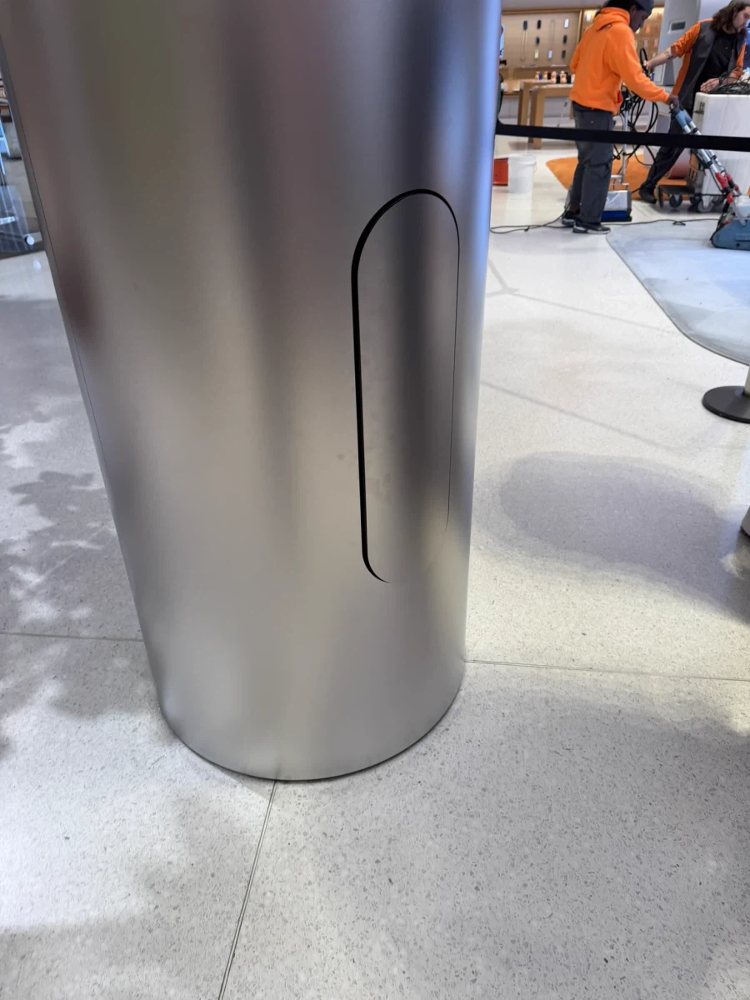

한때 화제였던 애플스토어의 소화기 함.
소화기의 빨간색이 스토어의 인테리어 미감을 해친다면서 기둥에 소화기 함을 만들어 넣고
안에다가 처박아 둔 것 때문에 말이 많았음.
일단 전혀 눈에 띄지 않는다는 것이 심각한 문제였으니까.
이 사건을 본 화재에서 살아난 경험이 있는 사람이 차라리 그럴거면 이쁜 소화기를 만드는 게 낫겠다고 생각함.
그래서 방패 형태에, 벽이 걸어둘 수 있게 만들어서 인테리어로도 쓸 수 있는 소화기를 만듬.
소화기가 가리고 있는 부분에 구멍을 파고 소화전을 설치할 수 있는 것은 덤임.
약재도 4kg 정도를 충전할 수 있어서 가정용 소화기가 3.3kg인걸 생각하면 나름 역할은 잘 해줄 수 있을 거라고.
화재 현장에서 소화기로 쓰고 나서 버리는게 아니라 대피할 때 머리 위로 떨어지는 낙상물을 방어하는 용도로도 쓸 수 있다고 함.

뭘 해도 소화기는 인테리어 무드를 깸
근데 무드를 깨야 티가나고 그래야 하는거니까